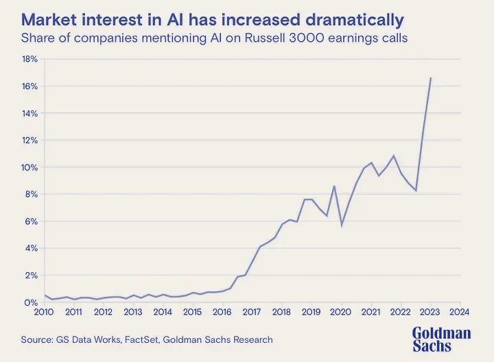
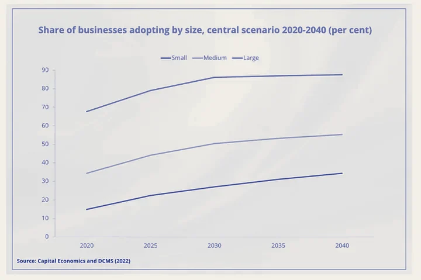
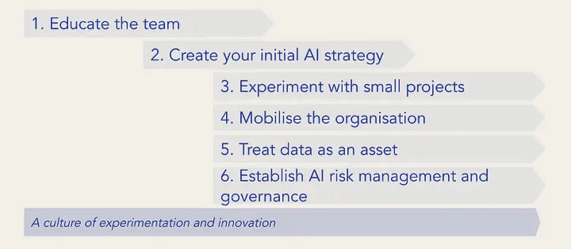
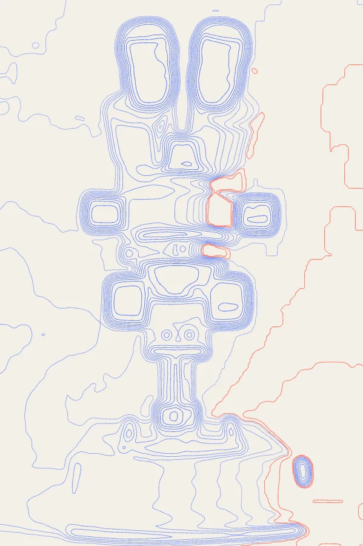
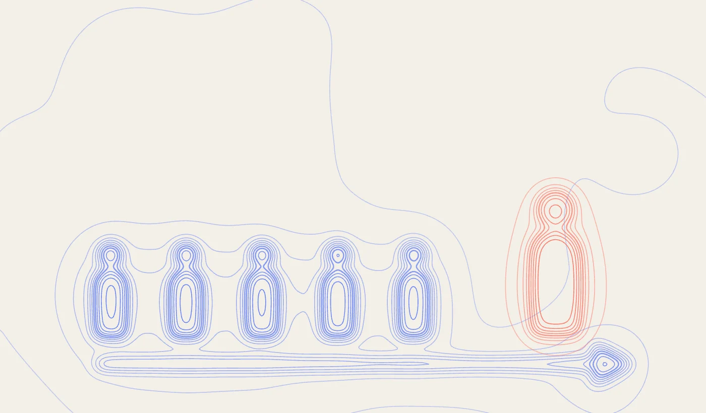

Start now
“Intelligence is the ability to adapt to change.”
— Stephen Hawking

According to Goldman Sach’s, AI investment is forecasted to approach $200 billion globally by 2025. In the 2021 American Business survey, only 4% of US firms reported using AI in their business processes. That said, a significant majority expect to have adopted AI over a three- to 10-year horizon. If those timelines are correct, then AI adoption would likely start having a meaningful impact on the U.S. economy sometime between 2025 and 2030.

According to the Department for Digital, Culture, Media & Sport (DCMS) re: AI activity in UK business (Jan 2022):
68% of large companies, 34% of medium sized companies and 15% of small companies have adopted at least one AI technology;
UK average result of a 15% adoption rate.
There is widespread expectation that AI will transform business’s product and service offerings, strategy and operating models
Preparing the workforce and the organisation’s data to enable and embrace the opportunities offered by AI will take some time
“The sooner organisations start their AI adoption journey the better it will be for them — an opportunity to gain competitive advantage”

1. Educate the team
In today’s boardrooms, AI literacy is becoming as crucial as financial acumen. Educating your team on AI fundamentals lays the groundwork for successful adoption and fosters a shared understanding of its potential impact on your business.
Understand AI Fundamentals: Invest in learning the basics of AI, including its capabilities, limitations, and risks.
Provide Training and Resources: Offer training sessions and resources on AI technologies, terminology, and best practices.
Stay Updated: Keep informed about the latest AI trends and developments to ensure the team remains current.
2. Create your initial AI Strategy
Crafting an initial AI strategy is like plotting a course on a map — it provides direction and purpose to your AI journey. It involves envisioning your future business model, aligning AI initiatives with your business goals, and identifying first use cases. The initial AI strategy will evolve, but having a starting point is crucial.
Review your Current Situation: Understand current AI practices within your company and adoption within your industry.
Think about the Future: Consider how AI-powered products and services could shape your future business model. Consider the future AI powered operating model: which functions will be human-led, AI-led, or a combination. How AI could lead to competitive advantage. Plan your talent strategy accordingly.
Align your AI strategy with Business Goals: Define an initial AI strategy that aligns with your business objectives and ambitions. Develop metrics to measure AI’s business impact, such as cost savings and revenue growth.
Identify Use Cases: Find specific areas where AI can add value and prioritize projects based on impact and feasibility.
The CEO and senior management team should ensure that sufficient resources are allocated to AI initiatives and that they are treated as a strategic priority, not just a short-term project. Your initial AI strategy will evolve with experience. AI is a long-term investment.
3. Experiment with Small Projects
The path to mastering AI is paved with small, manageable steps. By starting with pilot projects in controlled environments, you can gain valuable insights, build momentum, and learn what works best for your organization. This experimental phase is about embracing an iterative approach, enabling improvement and adaptation to lessons learned and emerging trends.

Start with Quick Wins: Identify low-risk opportunities where AI can provide immediate benefits, typically learning what works and what does not work.
Pilot Projects: Begin with small-scale pilots in controlled environments to tackle well-defined problems.
Iterative Approach: Adopt an experimental, trial-and-error approach. Measure performance, gather feedback, and adjust accordingly. Scale successful pilots across the organisation.
Continuous Monitoring: Regularly monitor AI performance, gather stakeholder feedback, and remain agile to adapt to new trends.
4. Mobilize the Organisation
“Speed of learning — an essential capability.”
AI adoption is not just a technological shift; it’s an organisational transformation. Mobilising the organisation involves clear communication, thoughtful change management, and fostering a culture of continuous learning. This step is about bringing everyone on board, from leadership to frontline employees, to drive AI initiatives forward.
Open Communication: Clearly communicate the AI strategy, adoption plans, and results to gain buy-in and trust. Pay special attention to data as a critical asset and to risk management and governance — more details below.
Training and Reskilling: Invest in training programs to help employees adapt to and complement AI. Encourage practical use of AI tools. A very important step, helping to build expertise and trust throughout the organisation.
Change Management: Develop a change management plan to address any organizational resistance and ease the transition to AI. Create cross-functional teams to ensure diverse perspectives and expertise.
Foster a culture of continuous learning and innovation to encourage employees to explore new ideas, experiment with AI technologies, and contribute to AI adoption efforts effectively.
5. Treat Data as an Asset
“In the world of AI, data is the new oil — a critical asset that fuels innovation and insights”
A cliche but fundamentally correct.
Investing in data management practices and data infrastructure will pay dividends as your AI capabilities grow. Across the whole organisation, treat data as critical asset. Data is fundamental, no matter how AI develops in the future and the different AI tools that are adopted.
Data Readiness: AI systems heavily rely on high-quality data, so start by assessing data readiness for AI and investing in data quality initiatives. Identify and capture or acquire any missing critical data.
Data Management Policy: Define a comprehensive data management policy. Clearly define data ownership and stewardship roles within the organisation. Prioritise the development of robust data pipelines and storage solutions.
Compliance and Security: Ensure compliance with data privacy regulations and implement robust data security measures.
Holistic Approach: Implement a joined-up approach to data across the organization to gain better insights and improve decision-making.
6. Establish AI Risk Management and Governance
Responsible AI isn’t just about averting pitfalls — it’s about building lasting trust. Robust governance of AI ensures that innovation and ethics advance in lockstep, safeguarding both reputation and long-term value creation.
Responsible AI Policies: Define clear policies for AI risk management and governance. Implement AI model lifecycle management, including documentation, validation, and certification.
Accountability: Designate individuals responsible for AI development, deployment, monitoring, ethical concerns, and regulatory compliance. Establish a governance structure with defined roles, responsibilities, and operating procedures.
Stakeholder Engagement: Educate stakeholders about AI policies, gather feedback, and maintain transparent communication.
Stay Informed on Regulations: Keep up with emerging AI regulations and legal cases to ensure responsible and trustworthy AI adoption.
Additional Considerations

Lead by Example
The CEO must be a visible champion and advocate for AI initiatives within the organization. Leading by example and actively participating in AI education, strategy sessions, and decision-making processes sends a powerful message about the importance of AI to the entire workforce.
Foster a culture of experimentation and innovation
Encourage employees to explore new ideas, experiment with AI technologies, and share their learnings and insights with the broader team. Create a supportive environment where failure is viewed as an opportunity for learning and improvement, and where employees feel empowered to take calculated risks in their AI initiatives.
Promote Knowledge Sharing: Facilitate knowledge sharing and collaboration across departments and teams to harness collective intelligence and drive innovation. Encourage cross-functional collaboration, create forums for sharing insights and best practices, and recognize and reward contributions to AI adoption efforts. Consider an in-house AI competency. This doesn’t require building a large team of AI experts, but having a core group dedicated to understanding and managing AI applications would be valuable.
Foster a culture that views AI as a strategic imperative and competitive differentiator. Encourage an “AI-first” mindset across the organization, where AI is considered as a potential solution for every business challenge or opportunity from the outset.
Our main recommendation:
Get started.